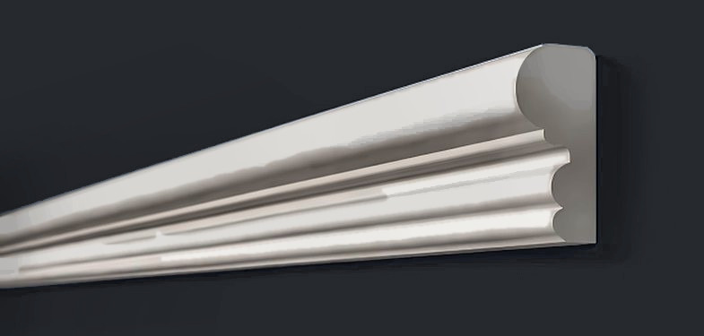
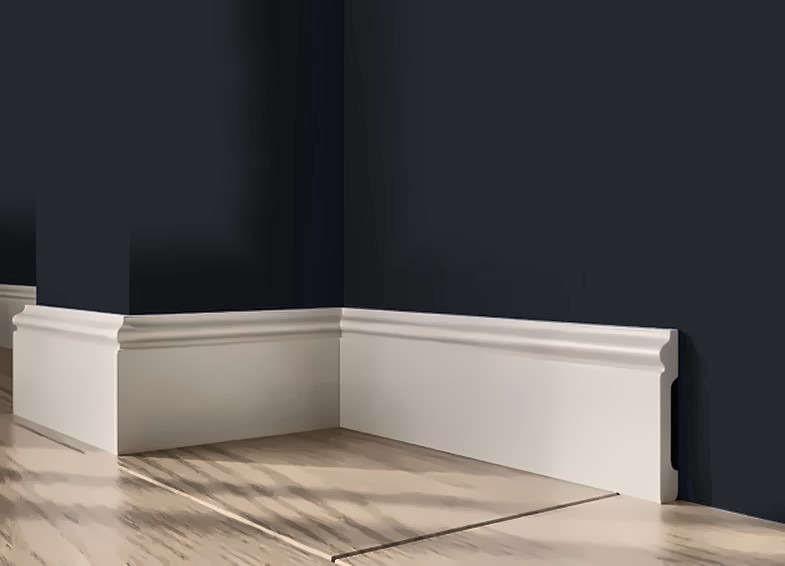
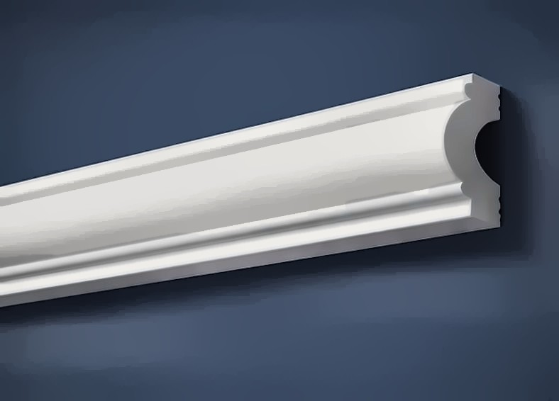
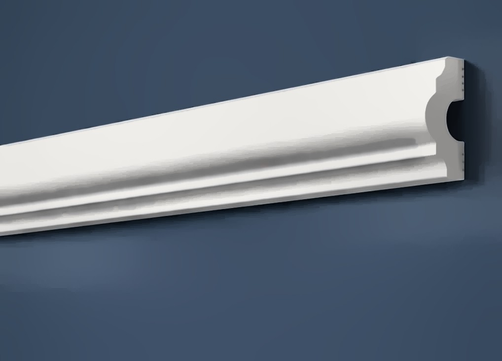
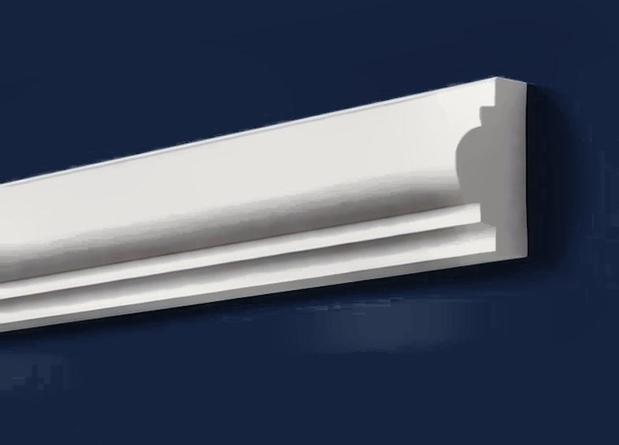
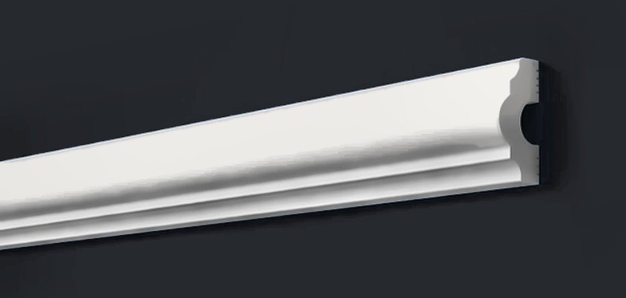

Молдинг для стен белый под покраску, ударопрочный, 22×11×2000 мм — A608
22×11×2000 мм, полистирол высокой плотности (дюрополимер), ударопрочный, влагостойкий, под покраску — белый

Профиль (сечение)
Сечение в масштабе: ширина 22 мм, толщина 11 мм (стена снизу). Контур снят с каталога производителя.
Характеристики
| Артикул | A608 |
| Тип | Молдинг для стен |
| Ширина | 22 мм |
| Толщина | 11 мм |
| Длина | 2000 мм |
| В коробке | 46 шт |
| Материал | полистирол высокой плотности (дюрополимер) |
| Покрытие | белый грунт, под покраску |
| Производитель | ARTDEC (Казахстан) |
О товаре
A608 — настенный декоративный молдинг ARTDEC из полистирола высокой плотности (дюрополимера) под покраску, 22×11×2000 мм. Из него собирают рамки и панно на стенах, закрывают стык обоев и покраски, делят стену на зоны.
Молдинг поставляется белым и красится вместе со стеной или в контрастный цвет. Монтаж на клей (жидкие гвозди), углы запиливаются под 45°. Для рамки считайте периметр плюс запас на подрезку.
С этим берут
Что обычно докупают вместе с A608 (молдинг для стен): плинтус в тот же цвет, что и стена; рамки и панно на соседней стене; стык стены и потолка.



Ещё в разделе «Молдинги»




Заявка
Ответим с ценой, наличием и сроком в рабочее время. Быстрее всего — написать в чат (кнопка «Чат» внизу справа) или заказать обратный звонок — перезвоним сами.
Оставьте номер — перезвоним в рабочее время, расскажем про наличие, цену и доставку. Укажите в комментарии, когда удобно принять звонок.
Менеджер подтвердит наличие и стоимость доставки и пришлёт ссылку на оплату картой или СБП: предоплата 50% (остаток при получении) или 100%. Самовывоз со склада в СПб — бесплатно.